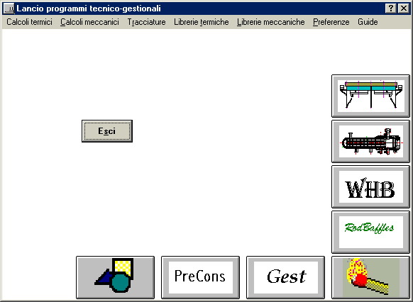

Questa versione della finestra iniziale è quella che appare in caso di funzionamento autonomo (vedi Funzionamento in rete).
Il sistema dei menu è illustrato in Il menu.
Il sistema dei pulsanti è illustrato in Il menu.